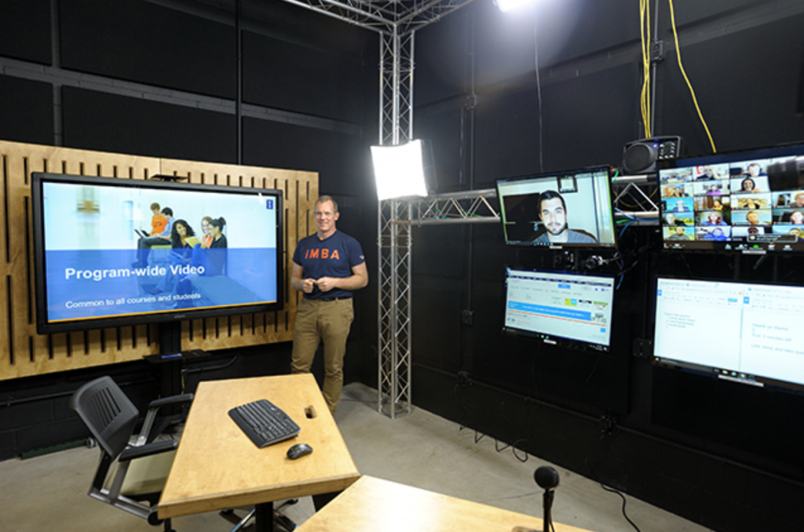
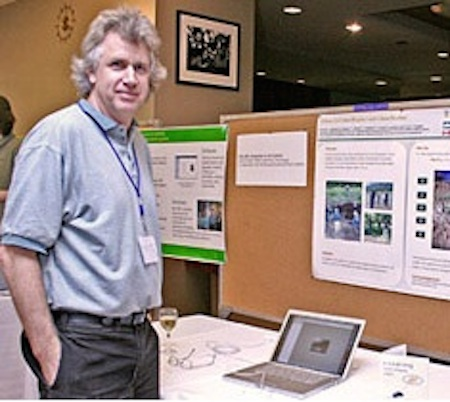

9.7 Questões organizacionais



9.7.1 Prontidão institucional para o ensino com tecnologia
Uma das questões críticas que influenciará a seleção de mídias por parte de professores e formadores é:
- a forma como a instituição estrutura as atividades de ensino;
- os serviços de suporte letivo e tecnológico já existentes;
- o apoio à utilização de mídias e tecnologia que a sua instituição disponibiliza.
Se uma instituição se encontra organizada em torno de um número fixo de tempos letivos diários e no recurso a salas de aula físicas, os professores focar-se-ão predominantemente na docência presencial. Conforme a citação de Mackenzie na Seção 1 do Capítulo 9:
"Os professores sempre procuraram tirar o melhor partido de tudo o que têm à mão, mas é com isso que temos de trabalhar. Os professores adaptam-se."
O inverso revela-se igualmente verdadeiro. Se a escola ou universidade não suporta uma determinada tecnologia, os professores, de forma compreensível, não a utilizarão. Mesmo que a tecnologia esteja implementada, como um LMS ou uma estrutura de produção de vídeo, se os docentes não receberem formação ou orientação sobre o seu uso e potencial, a ferramenta será subutilizada ou simplesmente ignorada. Adicionalmente, se as tecnologias de base (core), como os LMS ou sistemas de gravação de aulas, não forem devidamente geridas, ou se os serviços técnicos tiverem carência de pessoal, os professores perdem a paciência e a confiança no sistema.
Devido à inércia organizacional das instituições, verifica-se frequentemente uma tendência para privilegiar tecnologias passíveis de introdução com o mínimo de alteração estrutural, embora estas possam não corresponder às ferramentas de maior impacto na aprendizagem. Estes desafios de ordem organizacional são complexos e constituem frequentemente o motivo principal para a lentidão na implementação de novas tecnologias no ensino (ver Marshall, 2009 para uma metodologia de avaliação da prontidão das instituições para a aprendizagem on-line).
A maioria das instituições que introduziu com sucesso as mídias e tecnologias no ensino em larga escala reconheceu a necessidade de assegurar suporte profissional adequado aos docentes, disponibilizando designers instrucionais, designers de mídias e técnicos de TI de apoio ao ensino e à aprendizagem. Algumas instituições disponibilizam igualmente fundos para projetos inovadores de docência.
9.7.2 Trabalhar com profissionais



Mesmo os docentes experientes na utilização de mídias no ensino beneficiarão da colaboração com designers instrucionais e produtores profissionais de mídias na criação dos recursos discutidos neste capítulo (com a eventual exceção das mídias sociais). Revela-se essencial que a escolha tecnológica seja norteada pelos objetivos pedagógicos, em detrimento de iniciar o planejamento com uma mídia específica em mente.
Apresentam-se vários motivos para a colaboração com profissionais:
- estes especialistas dominam a tecnologia e, consequentemente, permitirão desenvolver um produto de melhor qualidade e de forma mais rápida do que no trabalho autônomo;
- duas cabeças pensam melhor do que uma: o trabalho colaborativo gera ideias inovadoras e mais consistentes sobre a utilização do meio;
- designers instrucionais e produtores de mídias dominam habitualmente a gestão de projetos e orçamentação de produções, viabilizando o desenvolvimento de recursos dentro dos prazos e limites financeiros. Este aspecto assume relevância, dado que os professores podem facilmente despender mais tempo do que o necessário na produção de mídias.
O ponto central assenta no pressuposto de que, embora seja hoje viável para os professores produzir áudio e vídeo com qualidade razoável de forma autônoma, estes beneficiarão sempre do contributo de profissionais da produção de mídias.
9.7.3 Questões para ponderação
- Que tipo de apoio e qual o volume de ajuda posso obter da instituição na escolha e utilização de mídias no ensino? O apoio é de acesso simples? Qual a qualidade do suporte? Os profissionais de apoio possuem as competências de mídias de que necessito? Encontram-se atualizados quanto à utilização de novas tecnologias no ensino?
- Existe financiamento disponível para me libertar de tarefas letivas (buy-out) por um semestre e/ou para financiar um assistente de ensino, permitindo-me focar na concepção de uma nova disciplina ou na revisão de uma já existente? Há financiamento específico para a produção de mídias?
- Em que medida estarei condicionado a adotar tecnologias e procedimentos padronizados pela instituição (como o LMS ou sistemas de gravação de aulas), ou serei incentivado e apoiado a testar novas ferramentas?
- Existem recursos de mídias adequados e de utilização livre que possa integrar no meu ensino, evitando a criação de todos os conteúdos a partir do zero? Posso obter apoio dos serviços de biblioteca, por exemplo, na identificação destes recursos e na regularização de direitos autorais (ver Capítulo 11, Seção 2)?
Se as respostas a estas questões forem negativas, recomenda-se a definição de objetivos iniciais modestos para a utilização de mídias e tecnologia.
No entanto, a boa notícia assenta na facilidade crescente de criar e gerir as suas próprias mídias, tais como sites, blogs, wikis, podcasts e vídeos simples, recorrendo a computadores pessoais ou celulares. Adicionalmente, os próprios estudantes revelam frequentemente competência e interesse em colaborar no desenvolvimento de recursos de aprendizagem, caso lhes seja dada a oportunidade. O envolvimento dos estudantes na produção de mídias constitui uma metodologia eficaz para promover uma compreensão aprofundada da disciplina. Sobretudo, verifica-se uma disponibilização crescente de mídias educativas de qualidade e de utilização gratuita, conforme analisado no Capítulo 11, tornando desnecessária a criação sistemática de conteúdos a partir do zero.
Referências
Bates, A. and Sangrà, A. (2011) Managing Technology in Higher Education San Francisco: Jossey-Bass
Marshall, S. (2009) E-Learning Maturity Model Version Two: New Zealand Tertiary Institution E-Learning Capability: Informing and Guiding E-Learning Architectural Change and Development Wellington NZ: Victoria University of Wellington
Atividade 9.7
Não é proposta qualquer atividade prática nesta seção. As temáticas abordadas encontram-se detalhadas em Bates e Sangrà (2011).